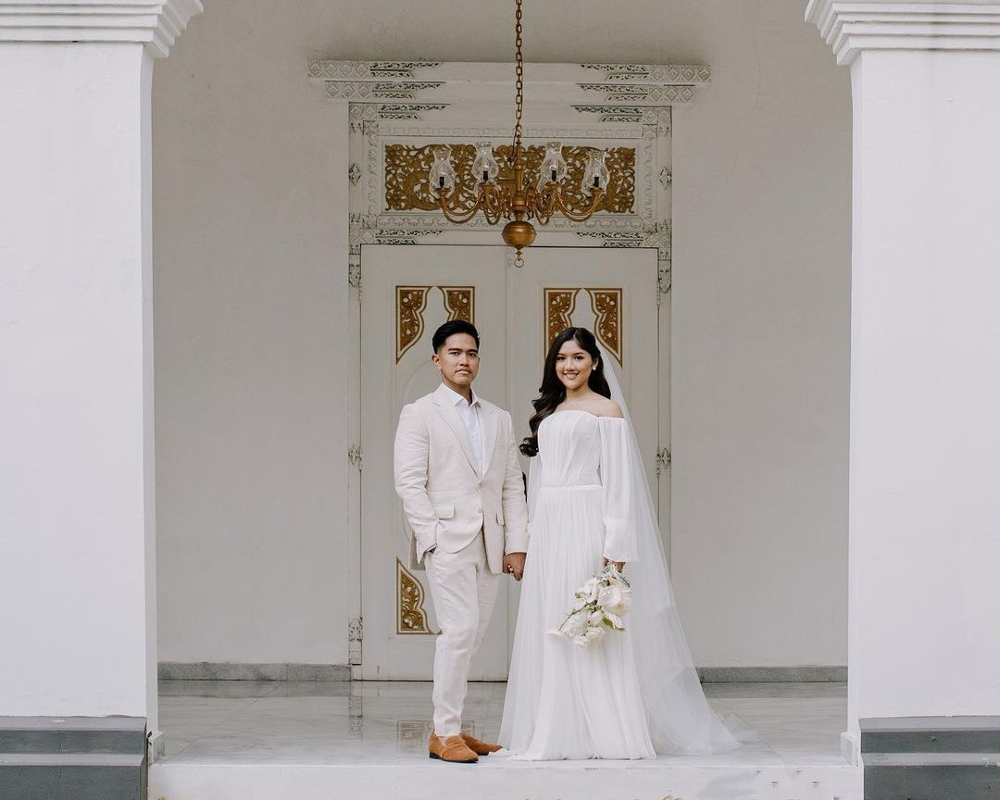
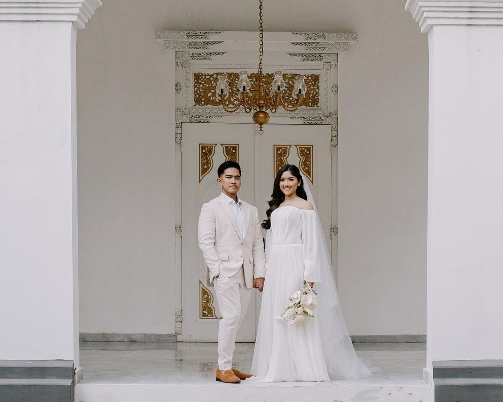
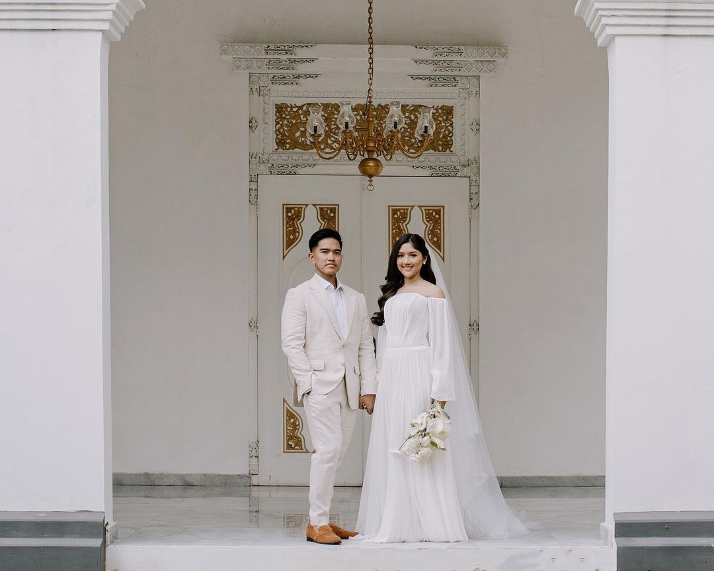

وَمِنْ ءَايَٰتِهِۦٓ أَنْ خَلَقَ لَكُم مِّنْ أَنفُسِكُمْ أَزْوَٰجًا لِّتَسْكُنُوٓا۟ إِلَيْهَا وَجَعَلَ بَيْنَكُم مَّوَدَّةً وَرَحْمَةً ۚ إِنَّ فِى ذَٰلِكَ لَءَايَٰتٍ لِّقَوْمٍ يَتَفَكَّرُونَ
Dan diantara tanda-tanda (Kebesaran)- Nya
ialah Dia menciptakan pasang-pasangan
untukmu dari jenismu sendiri,agar kamu
cenderung dan merasa tenteram kepadaNya,
dan Dia menjadikan di antaramu rasa kasih
dan sayang.
(QS. Ar-Rum : 21)
Putra kedua
dari Bapak Joko Widodo &
Ibu Iriana
Putri pertama
dari Bapak Mohammad Gudono (Alm) &
Ibu Sofiatun Gudono

10 Desember 2022
Pendopo Royal Ambarrukmo, Yogyakarta
11 Desember 2022
Loji Gandrung, Surakarta
Akad Nikah
Resepsi Pernikahan
"Menciptakan kenangan adalah hadiah
yang tak ternilai harganya.
Kenangan akan bertahan seumur hidup;
benda-benda hanya dalam waktu singkat."
Merupakan suatu kehormatan dan
kebahagiaan bagi kami apabila,
Bapak/Ibu/Saudara/i berkenan
hadir untuk memberikan
doa restunya.
di Jl.jend.sudirman km 33
desa penyang kecamatan telawang
"Selamat Menempuh Hidup Baru
Temanku Anggry Semoga Pernikahanmu
langgeng Selalu Dan Sampe Kakek
...Amin... Terharu Akhirnya Temanku
Yang Satu ini Di pertemukan
Jodohnya Dan Menikah Juga "
di Jl.jend.sudirman km 33
desa penyang kecamatan telawang
"Selamat Menempuh Hidup Baru
Temanku Anggry Semoga Pernikahanmu
langgeng Selalu Dan Sampe Kakek
...Amin... Terharu Akhirnya Temanku
Yang Satu ini Di pertemukan
Jodohnya Dan Menikah Juga "
di Jl.jend.sudirman km 33
desa penyang kecamatan telawang
"Selamat Menempuh Hidup Baru
Temanku Anggry Semoga Pernikahanmu
langgeng Selalu Dan Sampe Kakek
...Amin... Terharu Akhirnya Temanku
Yang Satu ini Di pertemukan
Jodohnya Dan Menikah Juga "
di Jl.jend.sudirman km 33
desa penyang kecamatan telawang
"Selamat Menempuh Hidup Baru
Temanku Anggry Semoga Pernikahanmu
langgeng Selalu Dan Sampe Kakek
...Amin... Terharu Akhirnya Temanku
Yang Satu ini Di pertemukan
Jodohnya Dan Menikah Juga "